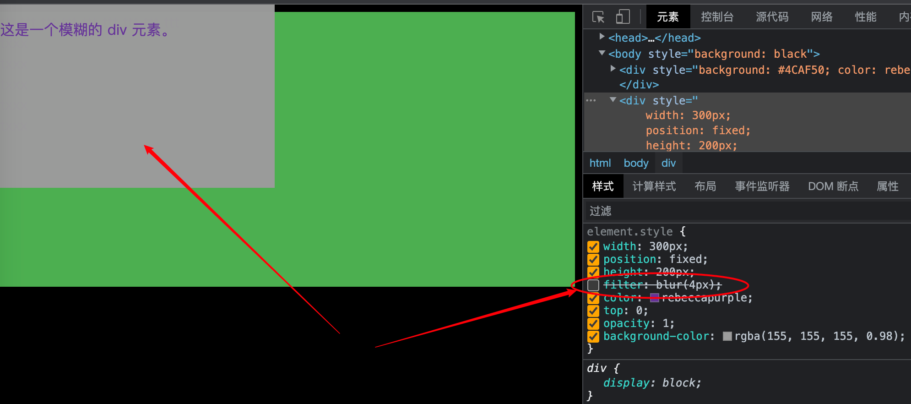
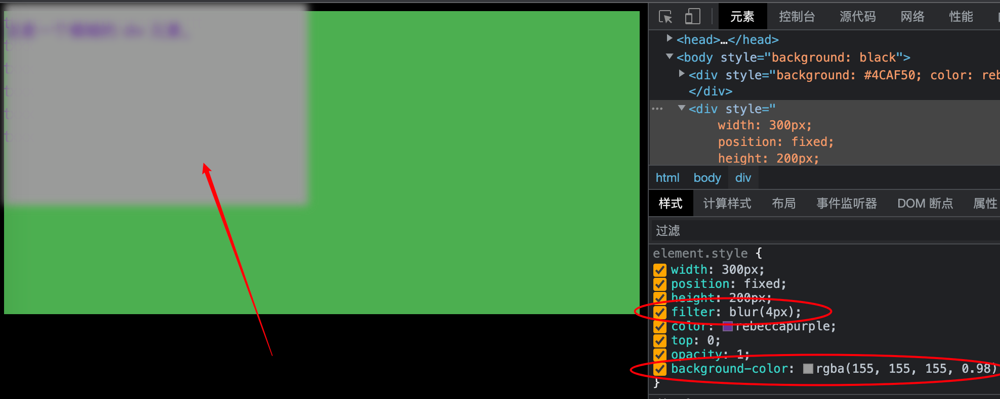

2023-07-20
filter
修改于: 2023-07-20- 相关属性
- backdrop-filter , 与它的区别是 filter 作用于整个元素, 而 backdrop-filter 作用于背景
笔者主要用来使用模糊效果:
filter: blur(10px);
注意, 模糊效果只能模糊设置的元素, 不能模糊其下面层的元素, 也就是说, 如果该层没有东西, 那么模糊效果基本等于无.
如如果想实现模糊层遮挡下面的 层, 目前最好的办法就是将两个的背景设置成一张图片...
比如如下页面
底层元素长这样

在上面加一个遮挡层

模糊遮挡层

示例代码
<!DOCTYPE html>
<html lang="en">
<head>
<meta charset="UTF-8">
<title>Title</title>
</head>
<body style="background: black">
<div style="background: #4CAF50; color: rebeccapurple; height: 300px;">
ttt
ttt
ttt
ttt
ttt
ttt
ttt
ttt
ttt
<div>txxx</div>
<div>txxx</div>
<div>txxx</div>
<div>txxx</div>
<div>txxx</div>
</div>
<div style="width: 300px;
position: fixed;
height: 200px;
filter: blur(4px);
color: rebeccapurple;
top: 0;
opacity: 1;
background-color: rgba(155, 155, 155, 0.98);
">
<p>这是一个模糊的 div 元素。</p>
</div>
</body>
</html>